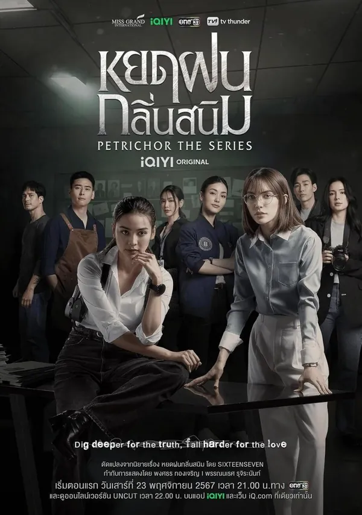

La Safoteca
La Safoteca
A Protagonista sáfica y sexualidad relevante para la historia.
La primera visita de campo de Tul, recién incorporada a su nuevo puesto, dista mucho de ser tranquila. Para colmo, debe trabajar junto a Cherran, la médica forense a cargo del caso. Sus personalidades y formas de abordar el trabajo chocan desde el inicio, dificultando cualquier entendimiento. Bajo la presión constante de la opinión pública —con cada caso expuesto ante los medios—, ambas deben aprender a colaborar. Con el tiempo y más oportunidades de trabajo conjunto, su relación comienza a mejorar. Pero todo se complica cuando ocurre un asesinato que reproduce con inquietante precisión un crimen cometido dieciocho años atrás. ¿Ha regresado la temida “Asesina de la Gota de Lluvia”, o se trata de una imitadora que juega con el pasado? Mientras las pistas se entrelazan, Tul y Cherran deberán dejar de lado sus diferencias para enfrentarse a un caso que amenaza con desenterrar viejas pesadillas.
Esta obra tiene 8 avisos de contenido. En la ficha completa están ocultos hasta que decidas verlos, para no destriparte nada.
- Título original
- Petrichor
- Género
- Policíaca, Romance, Suspense
- Dirección
- Pongsatorn Thongjaroen, Poy Pannares Ruchirananta
- Reparto
- Charlotte Austin, Engfa Waraha, Malin Chara-anan, Rina Chatamonchai
- Edad recomendada
- 18+
- Dónde verla
- Otras